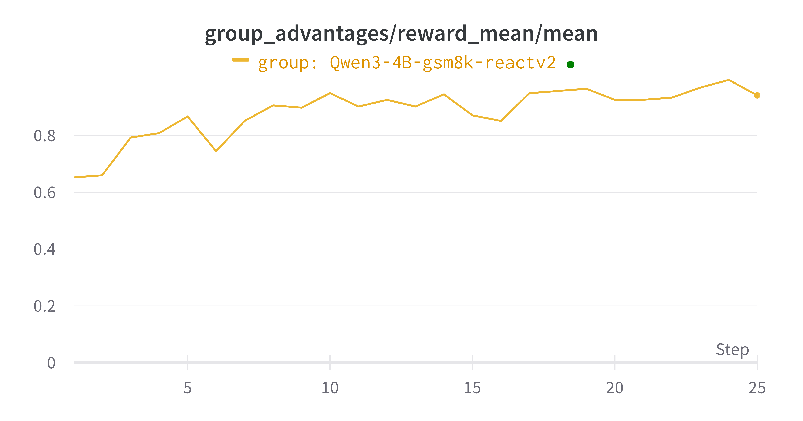
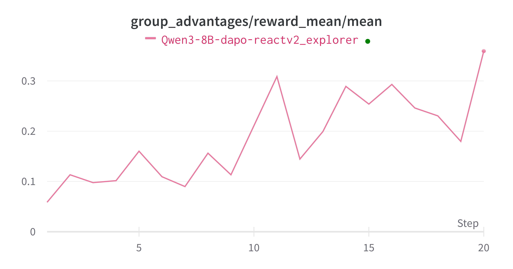
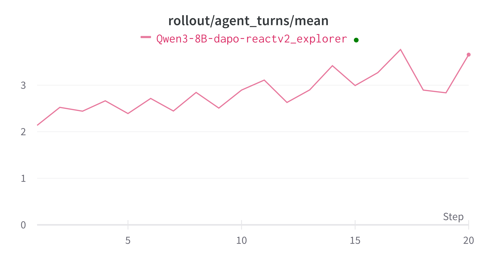

Multi-Step ReAct
This example serves as a demonstration for adapting the Trinity-RFT training workflow to your own agentic project, through our OpenAI-compatible ModelWrapper class.
Here, we use the AgentScope framework as an example, but you can certainly use any other framework, as Trinity offers great flexibility. This example fine-tunes a model on the GSM8K math dataset by leveraging an agent that uses ReAct-style reasoning with native tool calls.
Key Features Demonstrated
This example highlights several advanced capabilities of the Trinity-RFT framework:
Seamless Integration with External Agent Frameworks
Trinity-RFT is designed to be highly modular. You can easily embed complex, pre-existing agent logic from external frameworks like AgentScope directly into a Trinity Workflow.
No Need for Rewrites: You don’t have to re-implement the intricate logic of your agent (e.g., the ReAct loop, memory management, or tool invocation) within Trinity.
Focus on High-Level Orchestration: As shown in our
AgentScopeReactV2MathWorkflow, the Trinity workflow simply initializes and calls the external agent’sreplymethod. Trinity abstracts away the underlying complexity, allowing you to focus on the high-level task orchestration and reward design.
General Multi-Step Training
Modern agentic tasks often involve multiple steps of reasoning, tool use, and observation. Trinity-RFT natively supports training across these Multi-Step interactions.
Step-Wise Experience Generation: Instead of only learning from the final answer, Trinity can treat each step within an agent’s reasoning trajectory as a distinct learning opportunity.
Credit Assignment: The reward for solving a task is propagated back to all experiences within the successful trajectory, enabling the model to learn the entire reasoning chain, not just the final response. This is controlled by the
advantage_fnin the config.
Native Tool Calling Support
Trinity-RFT’s inference engine and training pipeline are built to support the native OpenAI tool_calls format.
Direct Training on Tool Use: The framework allows the model to be trained on deciding when to call a tool, which tool to call, and what arguments to use, all formatted in the standard
tool_callsconvention.Interoperability: This native support ensures seamless integration with any service or environment that consumes the OpenAI API format, such as an
MCP_server(Multi-Agent Collaboration Platform) or other tool-use evaluators.
How It Works
Below we show you how to perform this step-by-step.
The Workflow (workflow.py)
The core logic is encapsulated in the AgentScopeReactV2MathWorkflow class.
Initialization (
__init__):It first initializes the AgentScope environment and the desired agent (
ReActAgentV2).The most critical integration step is injecting Trinity’s model client into the AgentScope agent:
self.openai_client = model.get_openai_client() # ... self.agent.model.client = self.openai_client
This ensures that all API calls made by the AgentScope agent are routed through Trinity’s
ModelWrapper, which records the entire conversation history.
Execution (
run):The
runmethod is remarkably simple. It just passes the task description to the agent.content = self.agent.reply(msg).content
After the agent completes its multi-step reasoning and produces a final answer, Trinity extracts all the intermediate turns from the model’s history:
experiences = self.model.extract_experience_from_history(clear_history=True)
A reward is calculated based on the final answer and is applied to all
Experienceobjects generated from the trajectory. These experiences are then sent to the buffer for training.
Configuration
The configuration file fine-tunes the behavior of the entire system. Here are the key parameters for this example:
Native Tool Calling Settings
These settings in the explorer.rollout_model section configure the VLLM-based engine to generate and parse OpenAI-compatible tool calls.
We use the Qwen3 model and host model with vllm. The configuration for different model can be found in VLLM Toolcalls
explorer:
rollout_model:
# ...
enable_auto_tool_choice: true # Enables the model to generate `tool_calls`
tool_call_parser: hermes # Specifies the parser for formatting tool call outputs
reasoning_parser: deepseek_r1 # Helps in parsing the model's thought process
enable_thinking: true # Enables the model to generate intermediate "thoughts"
Multi-Step Training Strategy
This setting in the algorithm section defines how experiences from a Multi-Step rollout are processed.
algorithm:
algorithm_type: grpo
advantage_fn: step_wise_grpo # Key for Multi-Step training
step_wise_grpo: This strategy tells Trinity to create a distinct training sample for each step in the agent’s execution path. Thegrpoalgorithm then uses these samples to update the model.
Asynchronous Synchronization for Efficiency
Because Multi-Step rollouts produce a variable number of experiences, waiting for a fixed number of rollouts is inefficient. We use a dynamic synchronization strategy.
synchronizer:
sync_style: dynamic_by_explorer # Start training when enough experiences are ready
sync_interval: 2
sync_style: dynamic_by_explorer: The trainer starts a training job as soon as the buffer has collected enough experiences (i.e., individual turns), rather than waiting for a fixed number of full agent trajectories. This significantly improves GPU utilization and training throughput.
How to Run the Example
Prerequisites: Ensure you have Trinity installed, along with the dependencies for this example (e.g.,
agentscope). Please refer to Agentscope Github link.
NOTE: This example requires AgentScope from either:
Commit:
ad13ed5dacecb79d20abf626769f8c7d7a7d2afbBranch:
v0
Download the model you want to use, and fill in the configuration files in
examples/agentscope_tool_react/agentscope_tool_react_gsm8k.yamlorexamples/agentscope_tool_react/agentscope_tool_react_dapo.yamlLaunch the training job: Run the following command from the root directory of the repository.
trinity run --config examples/agentscope_tool_react/agentscope_tool_react_gsm8k.yaml
or
trinity run --config examples/agentscope_tool_react/agentscope_tool_react_dapo.yaml
The example here for gsm8k dataset is really simple and it can converge in a few minutes on 8 H20 GPUs.

The example here for dapo dataset take a little bit longer, but it also converges.

We can also see that the model generally start to use more tool calls to solve the problems.

Summary
This example is simple but demonstrates the power and flexibility of Trinity for training complex, Multi-Step agents that use tools. By seamlessly integrating external agentic logic and providing native support for Multi-Step training and tool calls, Trinity-RFT empowers you to fine-tune models on sophisticated, realistic tasks with high efficiency.